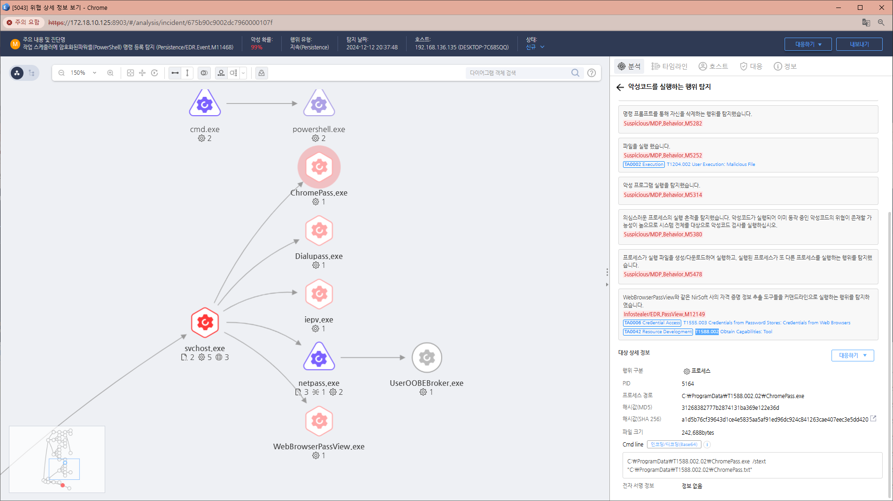

MITRE ATT&CK 액션을 기준으로 대응 방안을 작성
CmdLine = "/stext" OR CmdLine = "/scomma "

노출된 계정의 권한을 변경합니다. 노출된 계정의 비밀번호를 변경합니다. 공격자가 생성한 파일을 삭제합니다. 공격자에 의해 PC가 제어되었을 가능성이 있으므로 호스트 네트워크를 격리합니다. 공격자 C&C 서버로 추정되는 주소를 차단합니다.
Blocklisting (차단 목록화)
Domain Registration Monitoring (도메인 등록 모니터링)
Threat Intelligence (위협 인텔리전스)
Web Content Filtering (웹 콘텐츠 필터링)
Action 실행시 함께 영향을 받는 다른 Techniqes
| ATT&CK |
|---|
| T1078.000 |
|D3FEND| |:-----------:|